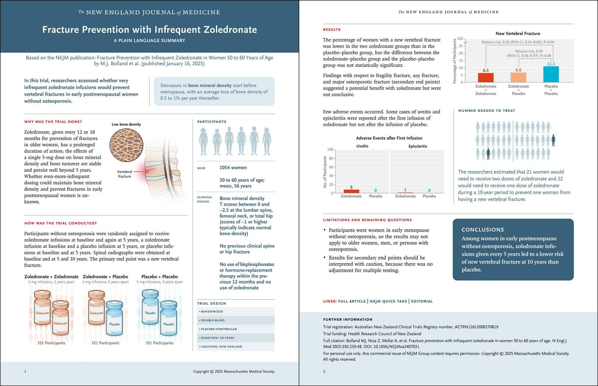

Fracture Prevention with Infrequent Zoledronate (bisphosphonates)
This is crazy: A single infusion prevented 30-40% of fractures in otherwise healthy ~50 yr olds. This stuff is considered a life extension drug similar to Statin, ACE Inhibitor, Aspirin, Metformin...
Background
Zoledronate prevents fractures in older women when administered every 12 to 18 months, but its effects on bone density and bone turnover persist beyond 5 years. Whether infrequent zoledronate administration would prevent vertebral fractures in early postmenopausal women is unknown.
Methods
We conducted a 10-year, prospective, double-blind, randomized, placebo-controlled trial involving early postmenopausal women (50 to 60 years of age) with bone mineral density T scores lower than 0 and higher than −2.5 (scores of −1 or higher typically indicate normal bone mineral density) at the lumbar spine, femoral neck, or hip. Participants were randomly assigned to receive an infusion of zoledronate at a dose of 5 mg at baseline and at 5 years (zoledronate–zoledronate group), zoledronate at a dose of 5 mg at baseline and placebo at 5 years (zoledronate–placebo group), or placebo at both baseline and 5 years (placebo–placebo group). Spinal radiographs were obtained at baseline, 5 years, and 10 years. The primary end point was morphometric vertebral fracture, which was assessed semiquantitatively and defined as at least a 20% change in vertebral height from that seen on the baseline radiograph. Secondary end points were fragility fracture, any fracture, and major osteoporotic fracture.
📷Download a PDF of the Plain Language Summary.
Results
Of 1054 women with a mean age of 56.0 years at baseline, 1003 (95.2%) completed 10 years of follow-up. A new morphometric fracture occurred in 22 women (6.3%) in the zoledronate–zoledronate group, in 23 women (6.6%) in the zoledronate–placebo group, and in 39 women (11.1%) in the placebo–placebo group (relative risk, zoledronate–zoledronate vs. placebo–placebo, 0.56 [95% confidence interval {CI}, 0.34 to 0.92; P=0.04]; and zoledronate–placebo vs. placebo–placebo, 0.59 [95% CI, 0.36 to 0.97; P=0.08]). The relative risk of fragility fracture, any fracture, and major osteoporotic fracture was 0.72 (95% CI, 0.55 to 0.93), 0.70 (95% CI, 0.56 to 0.88), and 0.60 (95% CI, 0.42 to 0.86), respectively, when zoledronate–zoledronate was compared with placebo–placebo and 0.79 (95% CI, 0.61 to 1.02), 0.77 (95% CI, 0.62 to 0.97), and 0.71 (95% CI, 0.51 to 0.99), respectively, when zoledronate–placebo was compared with placebo–placebo.
Conclusions
Ten years after trial initiation, zoledronate administered at baseline and 5 years was effective in preventing morphometric vertebral fracture in early postmenopausal women.
Paper · N Engl J Med · 2025Fracture Prevention with Infrequent Zoledronate in Women 50 to 60 Years of Agenejm.org